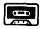

Nascom Journal |
5/80 |
Eingang 5 des IC’s wird auf volle Lautstärke gestellt und die Lautstärkenregelung danach durchgeführt. Der 3k Widerstand ist wichtig, damit der Lastwiderstand am NF-Ausgang nicht zu klein wird. Ein wichtiger Hinweis zum Schluß. Es dürfen nur Gerate mit Netztrenntrafo umgerüstet werden. Ohne Trennung vom Netz besteht Lebensgefahr.
Udo v. Mulert
______ ______ ___
__ Bonn _
Das Problem:
Für die Textverarbeitung sind Umlaute unerläßlich. Bei Nascom 1+2 entstehen hier aber an mindestens drei Stellen Schwierigkeiten:
1. Auf dem Bildschirm
Der erste und einfachste Schritt ist das Auswechseln des Zeichengenerators. Der Typ MCM 667700(P) ist für den deutschen Zeichensatz geeignet, pinkompatibel zum MCM 6576 und nicht mehr auf die -8V-Versorgung angewiesen (kann aber dranbleiben Ä, Ö und Ü werden mit b5B, b5C und b5D kodiert; ä,ö und ü mit b7B usw. Das Zeichen „ß“ hat den Kode b7E.(Bei MK-Systemtechnik DM 49,–)
2. Die Tastatur
Um alle Umlaute auf der Tastatur verfügbar zu haben (ein paar kommen mit crtl-Tasten, ausprobieren!), sollte man die Tastatur mit einem Umbausatz auf NAS-SYS Tastenzahl erweitern. Die Beschriftungen [ und ] entsprechen den Unlauten Ä und Ü, Ö jedoch fehlt. Ich habe Ö auf die CR/LF Taste gelegt. Dazu ist eine Änderung im Betriebssystem erforderlich. Dies muß man aber auf jeden Fall machen, denn:
3. Alpha-Shift
funktioniert nur von A – Z. Bei Nasbug T4 muß der Inhalt der Adresse bDF von b5B in b5E geändert werden, um drei weitere Tasten so wie Buchstaben behandeln zu können. Das Keyboard-Table habe ich ab Adresse b63F verändert, und zwar: bFF zu b1E, bFF zu b0E und zum dritten Mal bFF zu b16. Dies ergibt die Unlaute bei den genannten Tasten. Das Zeichen „ß“ kommt mit crtl-shift„.“.
4. Die meisten Drucker können keine Umlaute,
sind aber wegen ihres Schriftbildes sowieso nicht für Textsysteme zu gebrauchen. Ich drucke mit einer Kugelkopfschreibmaschine, da geht’s.
Anm.: b = £ , brit. Pfund.
Michael Bach, __ __________ __,
____ Stegen
| Leerkassetten |  | |
|
Speziell geeignet für Datenaufzeichnung. Hochwertiges BASF-Band.
Cassette 5-fach verschraubt. Cassette C10,d.h. 10
Minuten Spieldauer, daher besonders geeignet für
Mikrorechnerprogramme. |
||
|
10 Stk 20 Stk 50 Stk 100 Stk |
19.80 36.00 87.50 160.00 |
Jede Kassette mit selbstklebendem Aufkleber zum Beschriften. |
| Bei: |
M K – Systemtechnik __________ __ ____ Germersheim/Rhein Tel.: _____/____ |
|
| Seite 7 von 16 |
|---|